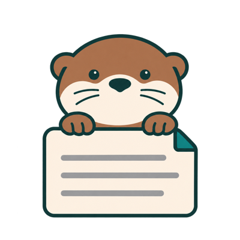

Berang
Your Mac,
reading to you.
curl -fsSL berang.monosodiums.com/install | sh
Copy
Copy and paste into Terminal to install Berang (Apple silicon, macOS 15 or later).
Or download the zip
It reads the hard parts too.
1×
1×